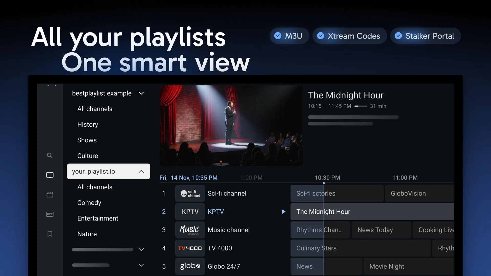

TiviMate 用了半年踩过的那些坑——从 EPG 空白到录制文件损坏
把 TiviMate 从新鲜到顺手的过程里，我先后遇到 EPG 加载不出来、录制到点没反应、U 盘频繁掉线、Premium 升级后功能没解锁等真实问题，逐条整理症状、原因和解法。
TiviMate 看着就是个 IPTV 播放器，装上订阅、打开节目单就能看直播，从官网的描述到实际界面都干净得不像有什么复杂设置。但我用了快半年下来，踩过的坑一个比一个具体——有些是刚装完就撞的，有些是用了几周才暴露，还有的跟设备和存储有关，换一台盒子可能就遇不到。
写这篇不是什么教程，就是把我遇到过、确认过解法的几个典型问题捋一遍，碰到的直接跳对应段落看解法，没碰到的提前有个印象也好。
坑一：EPG 全空或只加载了一半节目
症状：打开节目单，网格里大片空白，只有频道名没有节目标题；或者前几个频道正常、后面全空。第一次遇到以为订阅源有问题，换了另一份订阅还是一样。
原因：TiviMate 的 EPG 不是跟着频道列表一次性拉的，而是单独去请求 EPG 数据源，默认刷新间隔也比较保守。如果你的订阅提供商给的 EPG URL 响应慢、或者源本身只提供部分频道的节目数据，TiviMate 就会呈现这种半残状态。另外，有些 Android 盒子在后台把 TiviMate 的网络掐了，EPG 请求悄悄失败，界面上看不出来。
解法：先在设置里找到 EPG 相关的刷新选项，把自动刷新频率调密一点（比如每几小时一次），手动点一次「立即刷新」看能不能补出来。如果还是不行，去检查订阅源的 EPG URL 有没有单独提供——很多 IPTV 服务商会给一个独立的 EPG 文件地址，把它填到 TiviMate 的 EPG 源设置里，比从频道列表里自动提取的靠谱得多。再不行就换一个网络环境测试，排除盒子后台限网的问题。
这是我遇到的第一个坑，折腾了快两天才发现是订阅源的 EPG URL 本身就不完整，跟播放器没关系。
坑二：预约录制到点没录，或者录了文件打不开
症状：在节目单里选了明天凌晨三点的球赛预约录制，第二天起来一看什么都没有——录像管理里找不到新条目，U 盘目录里也没文件。还有一次显示录完了，拷到电脑上打开是 0 字节或者播放到一半卡住。
原因：录制功能是 Premium 独占的，先确认自己是付费版本没错；其次是设备待机问题——很多 Android TV 盒子在待机或屏幕关闭时会把应用进程冻结，TiviMate 的定时录制到点根本没机会启动。录了但文件损坏，大概率是 U 盘的问题：我用过一个杂牌 32G U 盘，写入速度不够，录制中途掉速导致文件损坏；还有几次是 U 盘空间不足时，TiviMate 不会报错，直接默默停录。
解法：第一，保持设备开机或设置永不息屏——至少预约录制的那几个小时不要让盒子进待机；第二，换一个靠谱的 U 盘或外接硬盘，最好是 USB 3.0 接口，录制前确认存储空间够（至少留一两倍节目时长的预估）；第三，去设置里把录制存储路径指定好，录完先在 TiviMate 里播放一遍确认文件完整，再拷出来。
我后来换了一块 64G 的 SanDisk U 盘，把盒子设置成录制时段不息屏，录制稳定性明显好起来。
坑三：U 盘挂载不稳定，隔三差五就要重新指定
症状：录制存储路径明明选好了那个 U 盘，过了几天 TiviMate 提示找不到存储设备，打开设置一看路径已经变成空的了。拔插一下 U 盘又恢复，但隔几天又掉。
原因：Android TV 对 USB 存储的挂载逻辑比较脆弱，有些盒子的 USB 口供电不足，U 盘运行一会儿就掉线；或者系统更新后存储权限被重置，TiviMate 丢失了访问 U 盘的权限。还有一种情况是 U 盘的文件系统兼容性——我有一个 NTFS 格式的 U 盘，在某品牌盒子上能识别但写入经常断，换成 FAT32 就稳了。
解法：优先用 FAT32 或 exFAT 格式的 U 盘，NTFS 在部分 Android 设备上需要额外驱动；如果经常掉线，试试换一个 USB 口（有的盒子后面的口供电比前面稳），或者用带独立供电的 USB Hub。权限问题的话，去 Android 系统设置里找到 TiviMate 应用，手动确认存储权限是「允许」。更多存储相关的排查项可以去TiviMate文档里翻。
这个坑我在两个不同品牌的盒子上都遇到过，格式改成 exFAT 之后基本没再掉过。

坑四：升级 Premium 后功能没解锁，还是只让加一个播放列表
症状：付了钱、Companion 也显示激活成功，回到 TiviMate 还是免费版的样子——多播放列表入口灰着，回看按钮点不动。以为没同步，重启应用、重装都没用。
原因：Premium 授权绑定的是设备的 Google Play 账号，不是 TiviMate 应用本身。如果你在 A 手机上买的 Premium，B 盒子上登录的是另一个 Google 账号，那 B 盒子上的 TiviMate 永远是免费版。还有一种情况是 Google Play 的授权缓存没刷新，TiviMate 读不到最新的订阅状态。
解法：先确认盒子上登录的 Google 账号和购买 Premium 时用的是同一个；如果账号没问题，去 Google Play 商店里找到 TiviMate，点进去看订阅状态显示的是什么——有时候需要手动点一下「恢复购买」才会把授权同步到设备上。实在不行，卸载 TiviMate 再从 Google Play 重装一次，授权会跟着 Play 商店走。
我就是在手机上买了 Premium，盒子上登的是另一个账号，折腾了好一阵才反应过来这个绑定逻辑。
坑五：破解版看似省钱，实则把全家桶带进家
症状：刷到过网上流传的「TiviMate Premium 破解版」「Mod APK」，装上之后确实显示 Premium，没过几天手机开始弹莫名其妙的广告条，浏览器被改了首页，卸载 TiviMate 都没用。
原因：这些破解包几乎都是二次打包的，原 APK 被植入了广告 SDK 甚至远控代码。你以为是白嫖 Premium，实际上手机的隐私数据、浏览器行为、甚至支付信息都在被偷偷上报。TiviMate 开发者 Armobsoft FZE 明确不支持任何破解来源，Google Play 上的正版才是安全路径。
解法：不用解法，直接避开——哪怕只看免费版，核心的直播和 EPG 都在，真需要 Premium 功能就走正规的 Companion 购买流程，需要 APK 安装包的话从官方下载拿就行，一年也就一顿饭钱。省这点钱换回来的清理成本可远不止这些。

防坑清单
写到这里，发现坑其实就那么几类，提前注意就能避开大半：
- 先确认存储格式：FAT32 或 exFAT 优先，NTFS 在 Android TV 上兼容性存疑
- 录制前看两件事：盒子别待机、U 盘空间够，这两个缺一个录制必黄
- Premium 看账号绑定：买在哪个 Google 账号下，就在哪个设备上登录那个账号
- EPG 单独配 URL：别依赖频道列表自动提取，单独的 EPG 源稳定得多
- 绝不碰破解包：省几十块钱不值得，广告和远控清起来要命
TiviMate 本身是个好播放器，干净、响应快、EPG 体验比不少同类应用舒服。把这些坑填上之后，日常用起来相当省心——直播一点就开，节目单该有的都有，预约录制到点自动跑。我把这套整理过的资料也同步在了GitHub、Gitee和GitCode，国内访问哪个顺手就去哪个。写这篇主要是想让后面上手的人少走我这些弯路。